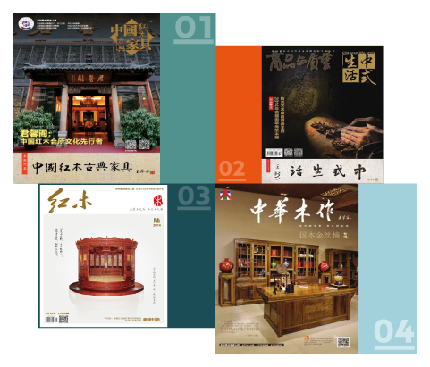

杂志
Magazine-
01《中国红木古典家具》
《中国红木古典家具》杂志创刊于2004年，是全球第一本中国传统家具的行业杂志，是中国消费者保护基金会打假工作委员会红木家具消费维权办公室的指导刊物。并定位于现状于趋势、新闻与事件、文化与学术、企管与经营、产业与品牌五大板块。
该杂志的读者定位主要是：全国红木家具生产、加工企业；全国红木家具大采购商；全国红木家具经销商；红木收藏家；红木及木作行业专家；红木发烧友（执着爱好者）
该杂志为双月刊，每双月1日出刊，全国公开发行。发行量6万册，价格60元/册，规格250mm×340mm。 -
02《中式生活》
-
03《红木》
-
04《中华木作》
